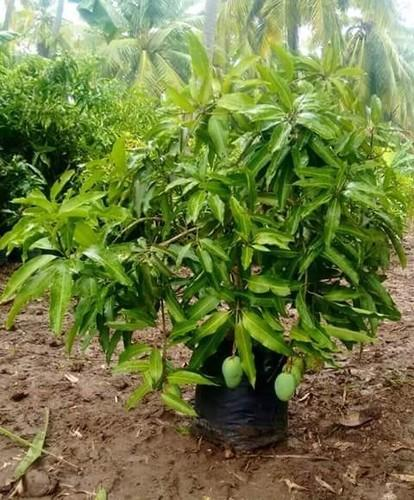

Fig.Mango Tree
A mango is an edible stone fruit produced by the tropical tree Mangifera indica which is believed to have originated from the region between northwestern Myanmar, Bangladesh, and northeastern India. M. indica has been cultivated in South and Southeast Asia since ancient times resulting in two distinct types of modern mango cultivars: the "Indian type" and the "Southeast Asian type". Other species in the genus Mangifera also produce edible fruits that are also called "mangoes", the majority of which are found in the Malesian ecoregion.Worldwide, there are several hundred cultivars of mango. Depending on the cultivar, mango fruit varies in size, shape, sweetness, skin color, and flesh color which may be pale yellow, gold, green, or orange. The mango is the national fruit of India, Pakistan and the Philippines, while the mango tree is the national tree of Bangladesh.
The inside of a mango pit In deep soil, the taproot descends to a depth of 6 m (20 ft), with profuse, wide-spreading feeder roots and anchor roots penetrating deeply into the soil. The leaves are evergreen, alternate, simple, 15–35 cm (5.9–13.8 in) long, and 6–16 cm (2.4–6.3 in) broad; when the leaves are young they are orange-pink, rapidly changing to a dark, glossy red, then dark green as they mature. The flowers are produced in terminal panicles 10–40 cm (3.9–15.7 in) long; each flower is small and white with five petals 5–10 mm (0.20–0.39 in) long, with a mild, sweet fragrance.[4] Over 500 varieties of mangoes are known, many of which ripen in summer, while some give a double crop.The fruit takes four to five months from flowering to ripen. The ripe fruit varies according to cultivar in size, shape, color, sweetness, and eating quality. Depending on cultivar, fruits are variously yellow, orange, red, or green. The fruit has a single flat, oblong pit that can be fibrous or hairy on the surface, and does not separate easily from the pulp.The fruits may be somewhat round, oval, or kidney-shaped, ranging from 5–25 centimetres (2–10 in) in length and from 140 grams (5 oz) to 2 kilograms (5 lb) in weight per individual fruit. The skin is leather-like, waxy, smooth, and fragrant, with color ranging from green to yellow, yellow-orange, yellow-red, or blushed with various shades of red, purple, pink or yellow when fully ripe. Ripe intact mangoes give off a distinctive resinous, sweet smell. Inside the pit 1–2 mm (0.039–0.079 in) thick is a thin lining covering a single seed, 4–7 cm (1.6–2.8 in) long. Mangoes have recalcitrant seeds which do not survive freezing and drying. Mango trees grow readily from seeds, with germination success highest when seeds are obtained from mature fruits.
In the Atharva Veda, this fig tree (Sanskrit: Umbara or Audumbara) is given prominence as a means for acquiring prosperity and vanquishing foes.The Lord of amulets art thou, most mighty: in the wealth's ruler that engendered riches, These gains are lodged in the, and all great treasures. Amulet, conquer thou: far from us banish malignity and indigence,and hunger.Vigour art thou, in me do thou plant vigour: riches art thou, sodo thou grant me riches.Plenty art thou, so prosper me with plenty: House-holder, hear a householder's petition.
In 2019, global production of mangoes (report includes mangosteens and guavas) was 56 million tonnes, led by India with 46% (26 million tonnes) of the world total (see table).[26] Almost half of the world's mangoes are cultivated in India alone, with the second-largest source being Indonesia.[27][28][29] Though India is the largest producer of mangoes, it accounts for less than 1% of the international mango trade; India consumes most of its own production.[30][31] Other major mango-producing countries in total tonnage produced in 2020 are Thailand, Indonesia, Pakistan, Mexico, Brazil, Bangladesh, Nigeria, and the Philippines.[32] At the wholesale level, the price of mangoes varies according to the size, variety, and other factors. The FOB Price reported by the United States Department of Agriculture for all mangoes imported into the US ranged from approximately US$4.60 (average low price) to $5.74 (average high price) per box (4 kg/box) during 2018.[33]